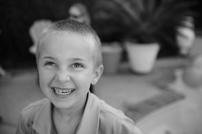

MUSIC
A Little Funk with Harrison
My daughter Natalie brought Harrison over when he was around 6 months old, so that I could babysit him while she tested some students that Saturday morning. After she dropped him off, I carried Harrison into the office where I have my guitar equipment set-up. I left him in his car seat so that he could be comfortable while I practiced a couple of songs. When I first started playing through my Bose system, he was really alert, looking all around trying to figure out where the sound was coming from. I thought I would pick-up the pace and play some ‘60’s groves to see what his reaction would be. The minute I started playing some rock and roll stuff, Harrison started kicking his arms and legs like a “funky chicken” in excitement. Hence the playing style and name of his song “A Little Funk with Harrison.” Harrison is my second oldest grandchild.
Played with Breedlove guitar.
Ali-Pop
My daughter Natalie brought Harrison over when he was around 6 months old, so that I could babysit him while she tested some students that Saturday morning. After she dropped him off, I carried Harrison into the office where I have my guitar equipment set-up. I left him in his car seat so that he could be comfortable while I practiced a couple of songs. When I first started playing through my Bose system, he was really alert, looking all around trying to figure out where the sound was coming from. I thought I would pick-up the pace and play some ‘60’s groves to see what his reaction would be. The minute I started playing some rock and roll stuff, Harrison started kicking his arms and legs like a “funky chicken” in excitement. Hence the playing style and name of his song “A Little Funk with Harrison.” Harrison is my second oldest grandchild.
Played with Breedlove guitar.
Beautifully Haunting My Love
This song was composed for my wife Tracy in the fall of 2003. We were at a church event that evening, and as I was helping to put things away, I looked over towards her direction and saw her standing with her back to the wall, and her head looking slightly up, like she was pondering something in a far off distance. It reminded me of an old movie where you see someone you desire, but can’t be with them at that moment…like an old Humphrey Bogart film.
Played with Breedlove guitar.

Jessie's Song
Our beloved Australian shepherd “Jessie” passed away at 8:00am on Christmas morning in 1998. We had family showing up at 9:00am for our Christmas morning festivities, so it was pretty hard on everyone that morning when they found out she had just passed away. As a result, I felt that I needed to compose a song for her because of the impact she had on the family…
On a more positive note, I performed this song in front of roughly 2,000 people in the Community Center in downtown Sacramento for our company Christmas party in 1999. When the M.C. introduced me and gave a brief overview of the song that I was about to play, the audience thought the M.C. said “my daughter passed away Christmas morning” vs. my “my dog passed away Christmas morning.” I remember hearing a couple of sniffles in the audience as I finished the performance and thought it was odd that people would be that moved over my dog passing. Then someone came up to me and said they were so sorry to hear about my daughter’s passing, to which I had to chuckle and tell them it was my dog that passed away….not my daughter. They were much relieved and said they couldn’t wait to get back to their table and tell them the “real story.”
Played with Breedlove guitar.

Reflections With Dad
When my father was diagnosed with a rare form of cancer in 2008, they couldn’t do anything for him, and sent him home for his final days. On one of my many visits to see Dad at the house that we all grew-up in as kids, I brought my Breedlove guitar along to play some quiet background music for him to relax too. What was interesting is that I came up with the whole completed accompaniment on the first pass of playing…which I’ve never done before with any of my song. When I finished playing this “new” song, Dad looked over and said “that was beautiful son.” After Dad’s passing a month later, I added the melody part to the song to give it more feeling and closure. Every time I hear this song, I reflect back on all my life long experiences with Dad….
Played with Breedlove guitar.

Serenity
This was my first attempt in creating a song with the Boss looping machine. I wanted to create something cool, with lots of layers. It was a little ambitious for my first try, but it worked out really well in the end. First, I lay down a harmonic pattern for two measures; followed by some background bass notes; and then some soft minor chords to round out the background accompaniment. I’m then able to play my lead melody over the top of it. The overall effect is a cool, relaxing piece that makes you want to daydream the day away….
Played with Breedlove guitar.